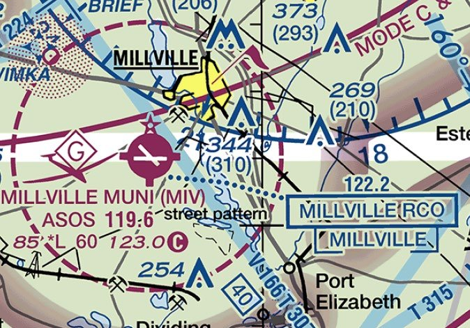
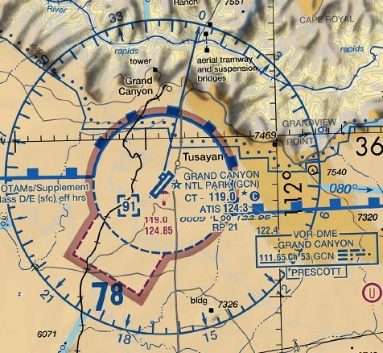

Part 107 Test Changes From October 26, 2026: Sectional Chart Images on Screen
Published October 5, 2026 · Updated October 6, 2026 · FAA and PSI sources checked October 5, 2026 · Part 107 Quiz editorial team
The FAA says that beginning October 26, 2026, the Part 107 knowledge test (the FAA calls it Unmanned Aircraft General – Small, or UAG) will include image-based questions that are not found in the printed testing supplement. The images come from current FAA sectional charts and are shown on the test screen. The announcement is in the FAA's Airman Testing Community Advisory, September 2026 Special Edition (pages 5, 6, 9 and 10).
This page sets out what the FAA has published, what it has not said yet, and how to practice for the new questions with free FAA charts. Nothing here comes from the live test: the FAA says the images used in active test questions cannot be previewed, and we have not seen them.
What the FAA Announced
Page 6 of the September 2026 Special Edition says that beginning October 26, 2026, the Instrument Rating Airplane (IRA) and UAG tests "will include image-based questions not found in the test supplements." It describes them as clearer, up-to-date images from the latest sectional charts (the instrument test also uses approach and low-altitude enroute charts), sourced from the FAA's VFR charts and IFR low-altitude charts.
Treat October 26 as the FAA's scheduled date, not a date that cannot move. The date has already changed once: the June 2026 edition of the advisory said October 27, 2026. The August 2026 edition changed it to October 26 and marked it as a corrected date, and the September 2026 Special Edition repeats October 26 with the same note. The FAA lists every edition on its Airman Testing page, so check the newest one before your test day.
The same advisory (page 5) puts this in context. Under its Graphics Conversion Project, the FAA is embedding images directly in test questions so that printed supplements will eventually not be needed, and it already lists "Unmanned Aircraft" among the exams that have questions with embedded images. What is new on October 26 is the source of the images: questions whose images are not in the supplement at all.
What Changes and What Does Not
| Item | What the FAA or PSI says |
|---|---|
| Image-based questions from current sectionals | New on the UAG test from October 26, 2026. The images are not in the supplement. Source: ATCA Sept 2026 Special Edition, p. 6 |
| The supplement booklet (FAA-CT-8080-2H) | Still provided. No date has been set to remove supplements from test centers, the public will get "ample notice" first, and until then candidates keep access to the supplement for their exam. Source: ATCA Sept 2026, p. 5 |
| Previewing the real test images | Not possible. The FAA says the images in active questions cannot be previewed because that would compromise the exam. Source: ATCA Sept 2026, p. 5 |
| Measuring tools | Where a question needs a measuring tool, the FAA says applicants will have the tools they need. It cannot yet describe on-screen tools and says it will announce them well in advance. Source: ATCA Sept 2026, p. 5 |
| Number of questions | 60 scored, plus 5 unscored validation questions. The time limit includes the unscored ones. Source: PSI UAG bulletin, effective Sept 29, 2025 |
| Time allowed | 120 minutes Source: PSI UAG bulletin |
| Passing score | 70% correct (42 of the 60 scored questions) Source: PSI UAG bulletin |
| Content areas | Regulations 48%, Airspace Classification and Operating Requirements 20%, Weather 5%, Loading and Performance 2%, Operations 25% Source: PSI UAG bulletin |
| What the test center supplies | The supplement book, a counted number of blank scratch-paper sheets and a writing instrument. PSI's testing software has a built-in four-function calculator. Source: PSI UAG bulletin |
The September 2026 advisory does not announce any change to the number of questions, the time allowed or the passing score. Those figures come from PSI's Unmanned Aircraft General – Small bulletin, which still showed an effective date of September 29, 2025 when we downloaded it on October 5, 2026. If PSI publishes a newer bulletin, go by that one.
What the FAA has not said yet
- How many image-based questions a test will include, or which content areas they count toward.
- Whether a legend comes with the image. The two UAG samples in the advisory are small chart crops with no legend. The supplement booklet, which does have a legend, stays available until the FAA withdraws it.
- How often the images are refreshed. Sectionals are reissued every 56 days, but the FAA's own UAG samples come from charts dated June 12 to August 7, 2025, published in an advisory dated September 2026. Answer from what the image on your screen shows, not from what you remember of today's chart for that area.
- What on-screen tools will look like, if a question needs one.
The FAA's Two UAG Sample Questions, Explained
The advisory gives two sample UAG questions (pages 9 and 10). Both images below are the FAA's own, taken from the advisory without cropping or editing. They are cut from chart editions that have expired, so they are not for flight planning. The FAA marks answer A as correct in both.

The question: what type of airspace is associated with Millville Municipal (MIV), and is ATC authorization required to fly a small UA there? FAA answer: Class E airspace associated with an airport surface area, and authorization is required.
- The airport symbol is magenta, so the field has no control tower. On sectionals, airports with control towers are drawn in blue and all others in magenta.
- The dashed magenta circle around it is Class E surface airspace. The FAA's Chart Users' Guide defines that symbol.
- Under 14 CFR 107.41, a small UA needs prior ATC authorization in Class B, C or D airspace or within the lateral boundaries of the surface area of Class E airspace designated for an airport. That makes authorization required here, even though the airport has no tower.
- The data block under the name reads
85 *L 60 123.0followed by a circled C: field elevation 85 ft MSL, runway lighting with limitations (check the Chart Supplement), longest runway 6,000 ft, and 123.0 as the CTAF.
The other two options fail on the chart itself. Option B puts an operating control tower at a magenta (non-towered) field, and Class G would not need authorization anyway. Option C is wrong because the circle around MIV is dashed magenta, the Class E surface symbol, not a Class B or Class D boundary.

The question: if the Grand Canyon National Park (GCN) control tower is not in operation, which frequency should be used as the CTAF to monitor airport traffic? FAA answer: 119.0.
- The data block reads
CT - 119.0, then a star, then a circled C. In the FAA Chart Users' Guide, "CT" is followed by the primary tower frequency, the star means the tower operates part-time, and the circled C follows the frequency that serves as the CTAF. - So when the part-time tower is closed, 119.0 becomes the CTAF.
- 124.3 is labeled ATIS, the recorded information broadcast. 122.95 sits in the airport's data line, in the position the legend gives to the aeronautical advisory station (UNICOM). Neither one is marked with the circled C.
The skill being tested is the one the supplement figures have always tested: find the symbol, name it, apply the rule. What changes is how the image looks. It is a small crop of a recent chart, with no legend beside it in these two samples, and you work it out on the screen. Our sectional chart guide covers the symbols these questions lean on.
How to Practice on Current Sectional Charts
The FAA publishes every current sectional chart for free on its VFR Raster Charts page, as a PDF or a GeoTIFF. When we checked on October 5, 2026, the current sectional editions were dated September 3, 2026 and the next editions were listed for October 29, 2026. The files are large (the current Washington sectional PDF is about 117 MB), so download them on Wi-Fi.
- Get the legend first. The FAA's Aeronautical Chart Users' Guide (effective July 9, 2026) explains every symbol on current VFR charts. The supplement's own legend dates from the 2018 booklet, so check unfamiliar symbols in the Chart Users' Guide.
- Start with the FAA's two sample charts. Download the current Washington and Las Vegas sectionals, find Millville (MIV) and Grand Canyon (GCN), and compare them with the samples above. Note anything that differs between editions.
- Then drill your own area. Pick ten airports on your local sectional, a mix of blue (towered) and magenta (non-towered). For each one, answer five questions out loud: What airspace is at the surface? Does 107.41 require ATC authorization there? What are the field elevation and longest runway? What is the CTAF, and does it change when a part-time tower closes? What is the nearest obstruction's top in MSL and its height in AGL?
- Work small crops, not the whole chart. The samples show only a few miles around one airport. Zoom in until about that much fills your screen, and answer before you look anything up.
- Keep using the supplement. The booklet is still handed out, and the FAA has not announced an end to questions that refer to it. The FAA's testing supplements page lists FAA-CT-8080-2H, the booklet for remote pilots, as a free PDF.
- Try PSI's sample test. The advisory encourages candidates to check the PSI site regularly for sample questions in the new format. The UAG bulletin says a free sample test is under "Exam Resources" at faa.psiexams.com. We have not confirmed whether PSI's UAG sample already includes the new image-based items.
Our Free Quizzes and the Premium Pack: What They Cover
Our topic practice tests and the mock exam are text only, and so are the Premium Pack's mock exams and study bank. For the new on-screen image questions, we now have a free set of 25 image-based chart practice questions on excerpts of current FAA sectionals (editions dated September 3, 2026), each with an explanation. Use it alongside the free FAA charts and samples above.
What our questions do practice is the decision behind most chart questions. The Airspace practice test (38 free questions) covers airspace classes and when authorization is needed, MSL versus AGL, data blocks and chart symbols. The free 60-question mock exam mixes these with the other four areas at the current FAA weighting.
The optional Premium Pack (CA$29, about US$21) adds five more 60-question mock exams and a 385-question study bank as PDFs. Since October 6, 2026 it also has a PDF of 56 image-based questions on excerpts of FAA sectional charts (editions dated September 3, 2026), each with an explanation: the 25 free questions above plus 31 that are only in the pack. They are our own practice questions in the image-based format the FAA announced, not actual FAA test questions. The pack does not include the FAA's supplement, which is a free FAA download. You do not need the pack to prepare for the October 26 change.
FAQ
When does the Part 107 test change?
The FAA says image-based questions that are not in the testing supplement begin on the UAG (Part 107) test on October 26, 2026. The date was corrected once: the June 2026 advisory said October 27, and the August and September 2026 editions say October 26. Check the newest Airman Testing Community Advisory on faa.gov before your test day.
Will I still get the testing supplement booklet?
Yes, for now. The FAA says no date has been set to remove testing supplements from test centers, that the public will get ample notice first, and that until then candidates keep access to the supplement for their exam. For the Part 107 test, that booklet is FAA-CT-8080-2H.
Do the number of questions, time limit or passing score change?
No change has been announced. PSI's UAG bulletin, effective September 29, 2025, lists 60 scored questions plus 5 unscored validation questions, 120 minutes and a 70% passing score. The September 2026 advisory does not change any of those numbers.
Can I see the actual images used on the test?
No. The FAA says the images in active test questions cannot be previewed. It has published two UAG sample questions with images (pages 9 and 10 of the September 2026 Special Edition), and it points candidates to PSI's sample test questions.
Which sectional chart should I practice on?
The FAA says only that the images come from the latest sectional charts. Its two samples use the Washington and Las Vegas sectionals. Every sectional uses the same symbols, so start with those two (free from the FAA's VFR Raster Charts page), then drill your local chart.
Do your practice questions include chart images?
Two sets do. Our 25 free image-based practice questions show excerpts of FAA sectional charts (editions dated September 3, 2026), each with an explanation. The Premium Pack's chart file has 56: those 25 plus 31 more. Our other free quizzes and the pack's mock exams and study bank are text only: they practice the airspace and chart decisions behind these questions, but not reading a chart image on screen. For more image practice, use the free FAA sectionals and the FAA's samples.
Sources
- FAA, Airman Testing Community Advisory, September 2026 Special Edition, pp. 5, 6, 9, 10. Read October 5, 2026.
- FAA, Airman Testing Community Advisory, August 2026 Edition, p. 6, and June 2026 Edition, for the date correction. Read October 5, 2026.
- PSI, Unmanned Aircraft General – Small bulletin, effective September 29, 2025, p. 4 (test specifications) and p. 5 (materials). Read October 5, 2026.
- FAA, Airman Knowledge Testing Supplements (FAA-CT-8080-2H listed with an effective date of June 11, 2018; page last updated September 29, 2026). Read October 5, 2026.
- FAA, VFR Raster Charts and Sectional Aeronautical Charts (updated every 56 days). Read October 5, 2026.
- FAA, Aeronautical Chart Users' Guide, effective July 9, 2026: airport data and controlled airspace symbols.
- 14 CFR 107.41, Operation in certain airspace.
Other topics are in the Study Guide. Always confirm current test information at faa.gov before you book.